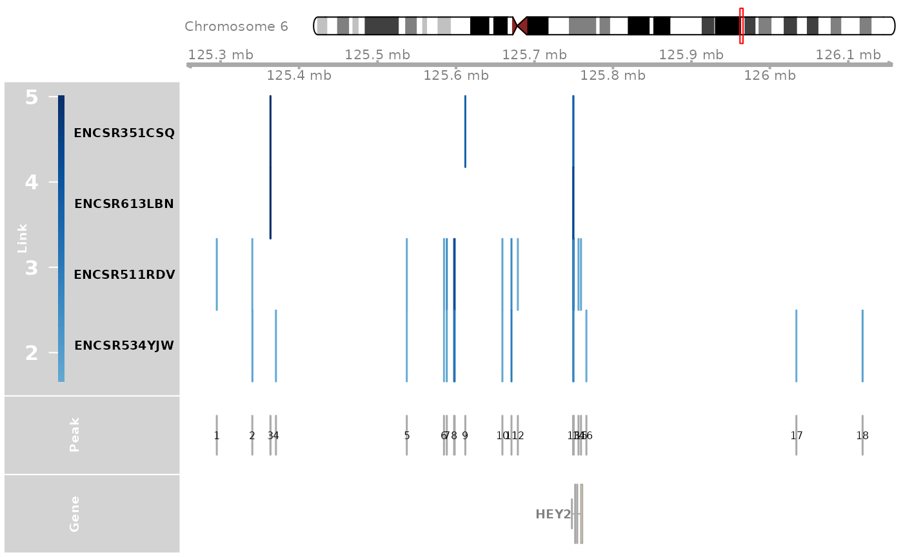
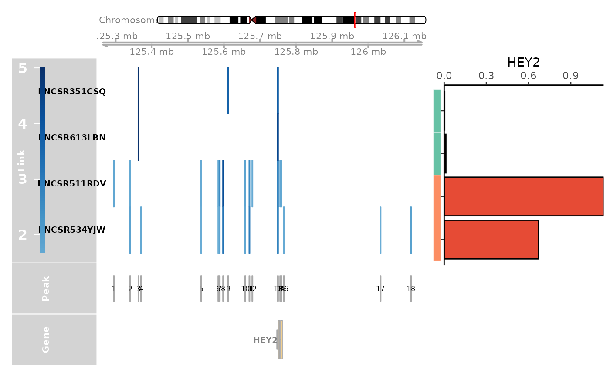
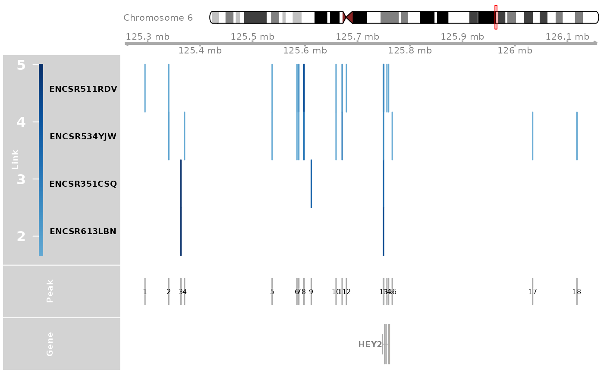
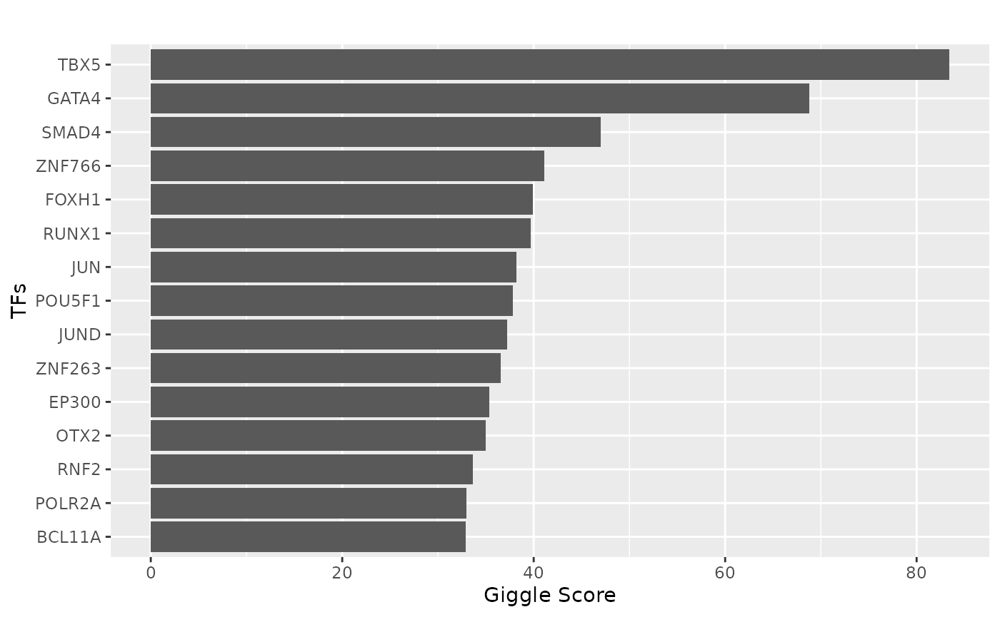

Analysis across multiple cell types
celltype_example.RmdWe compared the gene regulation of the HEY2 gene in cardiomyocytes between human atrium and ventricle tissues. Cardiomyocytes are the muscle cells in the heart responsible for contracting and pumping blood. The atrium and ventricles contain cardiomyocytes with different functionalities and characteristics. HEY2 plays a crucial role in regulating the size of the cardiac progenitor pool, the development of the right ventricle, and the overall morphogenesis of the heart. It has higher expression in ventricle cardiomyocytes. For each sample, CompassR visualizes HEY2 gene expression levels in cardiomyocytes and HEY2-linked CREs found in cardiomyocytes that are significantly associated with HEY2 gene expression.
### Load libraries
library(CompassR)
library(dplyr)
#>
#> Attaching package: 'dplyr'
#> The following objects are masked from 'package:stats':
#>
#> filter, lag
#> The following objects are masked from 'package:base':
#>
#> intersect, setdiff, setequal, union
library(Seurat)
#> Loading required package: SeuratObject
#> Loading required package: sp
#> 'SeuratObject' was built under R 4.4.0 but the current version is
#> 4.4.2; it is recomended that you reinstall 'SeuratObject' as the ABI
#> for R may have changed
#>
#> Attaching package: 'SeuratObject'
#> The following objects are masked from 'package:base':
#>
#> intersect, t
library(Gviz)
#> Loading required package: S4Vectors
#> Loading required package: stats4
#> Loading required package: BiocGenerics
#>
#> Attaching package: 'BiocGenerics'
#> The following object is masked from 'package:SeuratObject':
#>
#> intersect
#> The following objects are masked from 'package:dplyr':
#>
#> combine, intersect, setdiff, union
#> The following objects are masked from 'package:stats':
#>
#> IQR, mad, sd, var, xtabs
#> The following objects are masked from 'package:base':
#>
#> anyDuplicated, aperm, append, as.data.frame, basename, cbind,
#> colnames, dirname, do.call, duplicated, eval, evalq, Filter, Find,
#> get, grep, grepl, intersect, is.unsorted, lapply, Map, mapply,
#> match, mget, order, paste, pmax, pmax.int, pmin, pmin.int,
#> Position, rank, rbind, Reduce, rownames, sapply, saveRDS, setdiff,
#> table, tapply, union, unique, unsplit, which.max, which.min
#>
#> Attaching package: 'S4Vectors'
#> The following objects are masked from 'package:dplyr':
#>
#> first, rename
#> The following object is masked from 'package:utils':
#>
#> findMatches
#> The following objects are masked from 'package:base':
#>
#> expand.grid, I, unname
#> Loading required package: IRanges
#>
#> Attaching package: 'IRanges'
#> The following object is masked from 'package:sp':
#>
#> %over%
#> The following objects are masked from 'package:dplyr':
#>
#> collapse, desc, slice
#> Loading required package: GenomicRanges
#> Loading required package: GenomeInfoDb
#> Loading required package: gridHere, we will explore the celltype specific analysis of the gene HEY2 in cardiomyocytes of atrium and ventricle.
### set up the gene and celltype
gene = "HEY2"
celltype = "Cardiomyocyte"We will first query the expression and linkage data for the gene HEY2 in cardiomyocytes from CompassDB.
expr_vec = query_exprssion("hg38", gene, celltype = TRUE)
link_res = query_linkage("hg38", gene, celltype = TRUE)
link_df = link_res[["linkage"]]
sample_df = link_res[["samples"]]
### filter the table, extract features use for plotting
sample_df = sample_df[sample_df$bio_source %in% c("Heart right ventricle", "Left cardiac atrium"), ]
sample_df = sample_df[, c("sample_id", "bio_source")]
colnames(sample_df) = c("Sample", "Group")
### prepare linkage data
link_df = link_df[link_df$sample %in% sample_df$Sample & link_df$celltype == celltype, ]
# link_df[, c("sample", "gene", "peak", "zscore", "source", "celltype")]
### prepare sample information
sample_df = sample_df[sample_df$Sample %in% link_df$sample, ]
sample_df = sample_df[order(sample_df$Group), ]
### prepare gene expression
expr_df = data.frame(t(expr_vec)[paste0(sample_df$Sample, ".", sample_df$Sample, ".RNA.", celltype), ])
colnames(expr_df) = c("Gene")
rownames(expr_df) = sapply(rownames(expr_df), function(x) {unlist(strsplit(x, "\\."))[1]})
expr_df$Sample = rownames(expr_df)
link_df$sample_id = link_df$sample
nrow(link_df)
#> [1] 29We will then plot the expression of the gene in the samples and the linkage data.
scheme <- getScheme()
scheme$GdObject$cex.axis = 1
addScheme(scheme, "myScheme")
options(Gviz.scheme="myScheme")
sample_df$Group = c(rep("Ventricle", 2), rep("Atrium", 2))
# pdf("Heatmap_celltype_cadiomyocytes_HEY2.pdf", width = 10, height = 6)
### This can fail when ensemble server is down, if that is the case, please try it later
genome_track_map(link_df, sample_df, gene, expr_df, assembly = "hg38", legend.position="left", t = -30, b = 30)
#> the plot was flipped and the y limits will be applied to x-axis
#> Warning in get_plot_component(plot, "guide-box"): Multiple components found;
#> returning the first one. To return all, use `return_all = TRUE`.
# dev.off()TFBS analysis is performed on the CREs linked to the gene HEY2 in the cardiomyocytes.
### TFBS Analysis
track_plot = plot_genome_track(link_df, "HEY2", "hg38", sample_df$Sample)
peaks = track_plot[[length(track_plot)]]
peaks$name = as.character(peaks$name)
peak_order = make_peak_group(link_df, peaks, sample_df)
### Find CREs linked to HEY2 in ventricle but not in atrium
ht_peak_order = peak_order[peak_order[, "Ventricle"] >= 0.5 & peak_order[, "Atrium"]<0.5, ]
ht_peaks = rownames(ht_peak_order)
peak_vec = sub(":", "-", as.character(peaks))
ht_peaks = peak_vec[as.numeric(ht_peaks)]
tf = tf_binding("hg38", paste0(ht_peaks, collapse = "_"))
plot_giggle(tf)
# ggsave("Barplot_HEY2_Ventricle_specific_TFs.pdf", p, width = 5, height = 5)TFBS analysis results can also be visualized as a wordcloud.
library(ggwordcloud)
#> Loading required package: ggplot2
ggplot(tf[1:50, ], aes(label = Factor, size = combo_score)) +
geom_text_wordcloud() +
theme_minimal()
# p
# ggsave("Wordcloud_HEY2_Ventricle_specific_TFs.pdf", p, width = 6, height = 5)